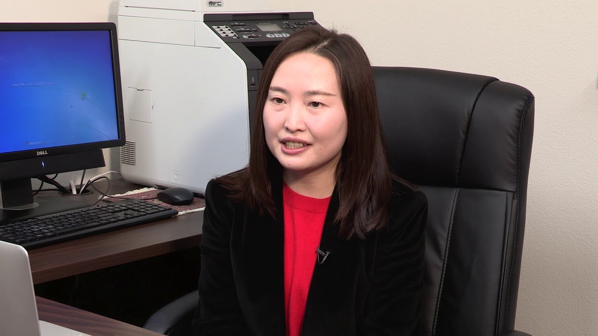
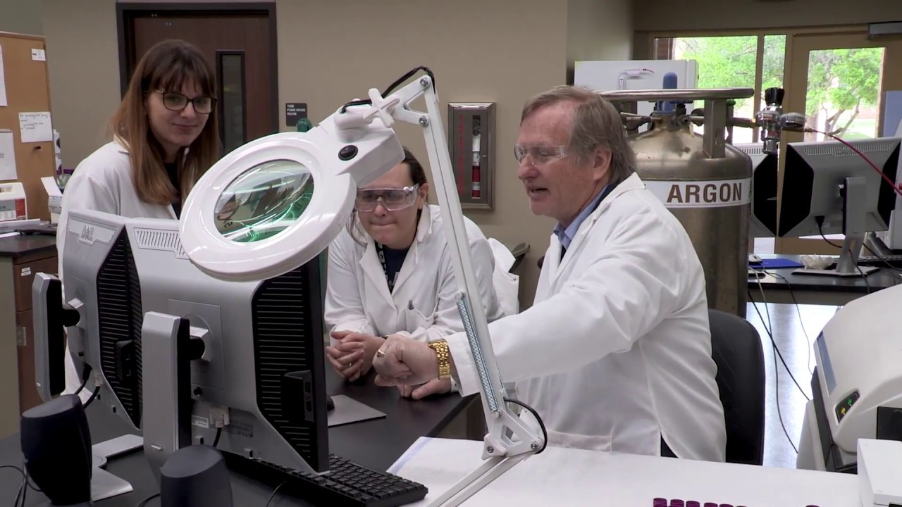
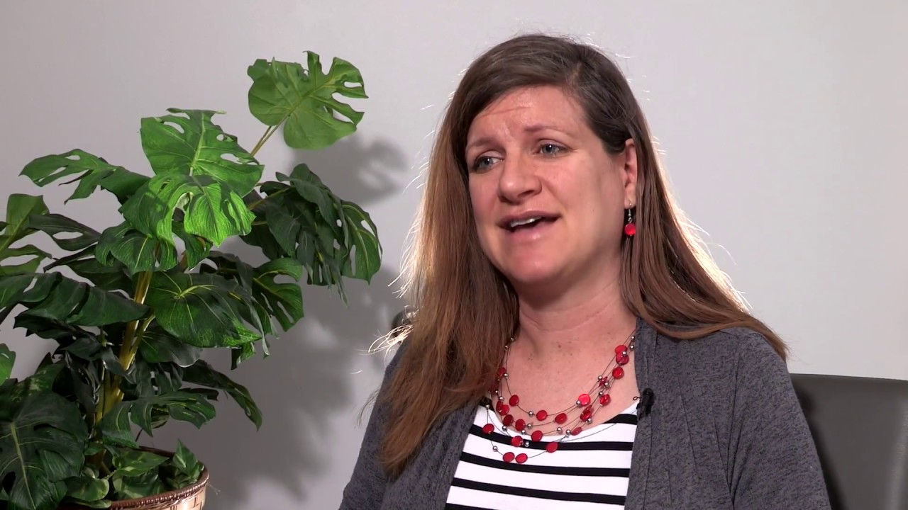
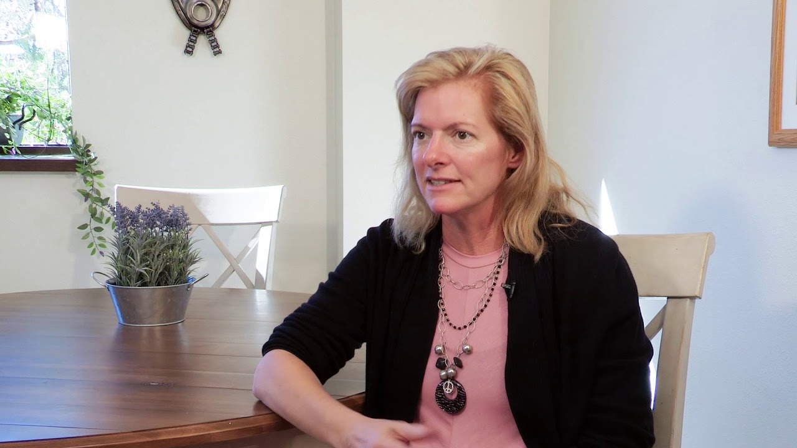
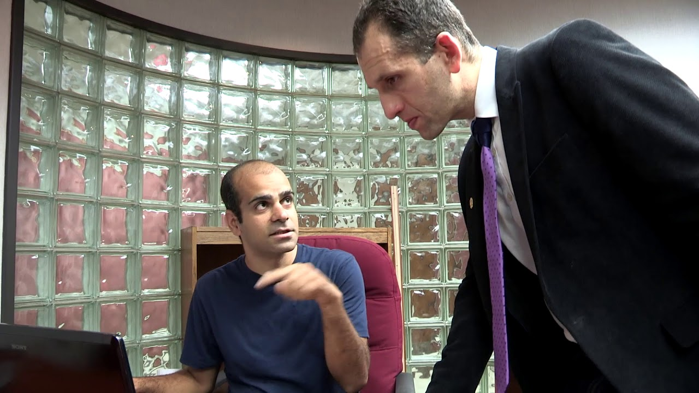
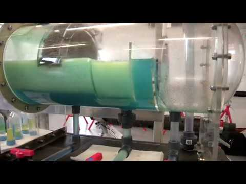

Renewable Energy and Sustainability
Beibei 'Helen' Ren, Ph.D.
Department: Mechanical Engineering
Beibei 'Helen' Ren, Ph.D.
Department: Mechanical Engineering
Water Contaminant Fate & Behavior in the Environment
Danny Reible, Ph.D., P.E.
Department: Civil, Environmental and Construction Engineering
Danny Reible, Ph.D., P.E.
Department: Civil, Environmental and Construction Engineering
Applying Engineering Methods & Techniques
Jennifer Cross, Ph.D.
Department: Industrial, Manufacturing and Systems Engineering
Jennifer Cross, Ph.D.
Department: Industrial, Manufacturing and Systems Engineering
Energetic Materials & Combustion
Michelle Pantoya, Ph.D.
Department: Mechanical Engineering
Michelle Pantoya, Ph.D.
Department: Mechanical Engineering
Modeling Dynamics of Post-Disaster Recovery
Ali Nejat, Ph.D, P.E., PMP
Department: Civil, Environmental and Construction Engineering
Ali Nejat, Ph.D, P.E., PMP
Department: Civil, Environmental and Construction Engineering
Big Data and Artificial Intelligence
Rattikorn Hewett, Ph.D.
Department: Computer Science
Rattikorn Hewett, Ph.D.
Department: Computer Science
Micro- & Nano Systems for Drug & Vaccine Delivery
Harvinder Gill, Ph.D.
Department: Chemical Engineering
Harvinder Gill, Ph.D.
Department: Chemical Engineering
Petroleum Reserves, Evaluation & Economics
Marshall Watson, Ph.D., P.E.
Department: Petroleum Engineering
Marshall Watson, Ph.D., P.E.
Department: Petroleum Engineering
Power Electronics, Energy Processing & Efficiency
Stephen Bayne, Ph.D.
Department: Electrical & Computer Engineering
Stephen Bayne, Ph.D.
Department: Electrical & Computer Engineering